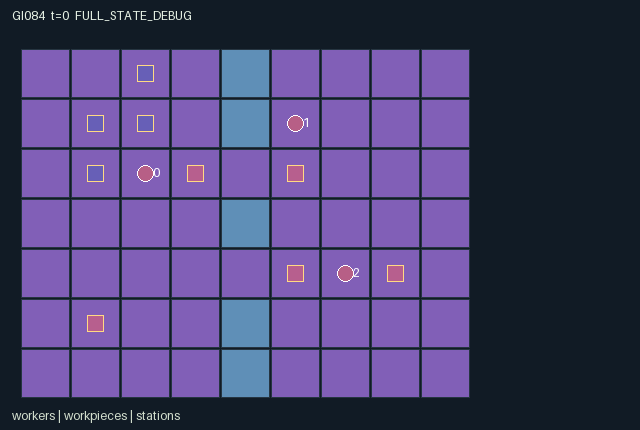

GI084 / SPATIAL
热力织机
三种专长接力处理物件，协调携带、缓冲区、通道、电量与热物件时限。
Original saved demonstration
Recorded native state, often authored scripts or interventions; information scope and failures are preserved in the original provenance. This is a saved demonstration, not live browser play.

Release verification episode
Untrained uniform legal actions. Actual JAX state sampled along the full original episode; full-state debug camera. No human performance or learning claim.

Run this game
crucibles play --game 84
Start Python locally, then open the address printed by the terminal. Installation, multiplayer, takeover and keyboard controls →
Objective, rewards & ending
Exact task contract
{
"objective": "Cooperatively ship three of four original pieces. Each shipment gives every role +1; each thermal spoil gives every role -1. Intermediate progress has no shaping reward.",
"natural_termination": "Three shipments or delivered plus still-viable pieces below three ends naturally. Otherwise horizon 128. Natural completion has priority; raw terminal calls absorb with zero reward.",
"interaction": "Role-exclusive loading, real carried pieces, single output buffers, two crossing lanes, common finite charge, two-channel machine power and hot-item deadlines couple partner scheduling and routing.",
"observation_access": "All rule-relevant gameplay state is public including retired-item records. Active item and station attributes are native flat features. Diagnostic per-step operation flags are not separate role observations or public scene events."
}Declared per-step reward bounds: -4 to 4. Observability: fully_observable.
Rules
- Four pieces pass through press, furnace and quench to shipping. Three shipments complete the task.
- Only the corresponding specialist loads each machine; everyone can carry, drop, hand off, ship and crank.
- Processing needs three, four and two powered ticks. Outputs must be removed before a machine reloads.
- At most two machines receive power each tick using rotating priority, spending one common charge per powered machine.
- Generator cranking adds four charge, capped at twenty-four; recycling scrap adds three.
- Hot furnace output has eighteen ticks to finish quenching. Stored, carried and processing hot items all face expiry.
- Two narrow crossings and exclusive worker cells create congestion; following into a just-vacated cell fails.
- Three shipments or insufficient remaining viable material ends naturally; otherwise step 128 truncates.
Original mechanism document (historical status wording retained)
# Thermal Loom — game-v3-00084 Status: AUTHORED_NOT_EXECUTED. Initial source attempt 0, proposal ordinal 84, window 0, training-source stream only. A=3, O=122, U=10, H=128. Observations are float32 within [-4, 128]; rewards are float32 within [-4, 4]. Stored numbers are int32 and flags bool. These finite bounds describe rules, not performance acceptance gates. ## Physical pipeline, output buffers and power The 9 by 7 workshop has a middle divider with crossings at y=2 and y=4. Four separate raw pieces start at (1,1), (2,1), (1,2), (2,0). Stations are press (3,2), furnace (5,2), quench (5,4), dock (7,4), generator (1,5). Stage codes are 0 raw, 1 cut, 2 hot, 3 finished, 4 shipped, 5 scrap, 6 recycled. Owner is -1 ground, 0..2 worker, -2/-3/-4 inside press/furnace/quench. Real coordinates govern all movement, pickup, drop, load, shipping, cranking and conflict. Each worker carries one item. Recover with empty hands selects the lowest-index eligible ground item within one; with full hands it attempts a drop at its cell. Another ground item or loaded machine at that cell blocks dropping. A completed output on a station blocks reloading, providing a single output buffer. Workers may occupy station cells; machines and workpieces are actual entities, not walls. Adjacent paired action 9 permits a handoff to an empty receiver. Agent collision rules make both crossings susceptible to queueing. Only the cutter can load raw into press, annealer cut into furnace, and finisher hot into quench. Durations are three, four and two powered ticks. New loads may be powered immediately. At most two machines are powered per transition, each spending one common charge. Priority rotates from t modulo three, with no hidden random tie-break. Charge starts at twelve; any worker can crank four at the generator, capped at twenty-four. Scrap recycling there returns three. Completed machine output is a physical ground item at the station. Furnace completion starts an eighteen-tick thermal window; newly heated output does not decay until the next transition. Existing hot items decay while carried, stored or processing. Quench completion precedes thermal expiry. Expiry makes scrap; if inside a machine it ejects to ground and frees the machine. Scrap can move or recycle, but cannot become usable material. Three shipments win; fewer than three possible good shipments is natural failure, retaining real partial deliveries and spoilage. The witness hypothesizes one full pipeline pass only. ## Coupled choices and alternatives A cutter who fills its output buffer faster than the annealer collects it cannot continue. A worker holding a finished item cannot pick a hot one without shipping, dropping or handing off. Loading all three machines competes for two power channels; deferring a nonurgent press can protect a quench deadline. Sending a finisher to crank restores everybody's opportunities but risks its hot item. A worker parked in a crossing blocks a partner's load route. These dependencies propagate through holder, item position, machine occupancy, charge and deadlines. Prospective paired tests: with all machines needed, compare press loading versus wait and trace rotating service/heat; compare output pickup versus wait and next loading eligibility; compare cranking versus wait at zero charge and all future timers; compare mutual versus one-sided handoff and the receiver's subsequent feasible load. No test was run by the author. Separately proposed changes to station placement, recipe order, output capacity, power budget, heat window or role permissions could move the bottleneck between movement, energy and deadlines. The delivered candidate has exactly this one fixed pipeline. ## Public state and scene All rule-relevant fields are public. Workpieces bind to real coordinates, stage, owner and heat; stations bind to actual loaded item and remaining work. Shipped/recycled entries remain in fixed arrays and observations as records but are inactive scene objects. Public event channels use observable counters, charge, timer and stage. Internal operation flags remain labelled debug information. Signed owner codes are represented losslessly as int32. ## Action legend - 0: Wait. - 1: Move north. - 2: Move east. - 3: Move south. - 4: Move west. - 5: Pick lowest-index adjacent ground item if empty; otherwise drop onto an unoccupied item buffer cell. - 6: Load eligible held item into nearby role-specific machine. - 7: Ship finished item at dock or recycle scrap at generator. - 8: Crank four shared charge at generator. - 9: Mutual adjacent item handoff to empty partner. ## Exact observation layout - Columns [0, 6), self: Own role one-hot(3), x,y,carrying item index. - Columns [6, 10), public: Clock, shared charge, cumulative delivered and spoiled. - Columns [10, 19), public: All workers: x,y,carrying per slot. - Columns [19, 39), public: All four pieces including retired records: x,y,stage,owner,heat. - Columns [39, 59), public: Five stations: x,y,timer,loaded; slots press,furnace,quench,dock,generator. - Columns [59, 122), public: Public 7-by-9 map flattened row-major yx. ## Interface and terminal boundary The binding addendum terminal_policy is absorbing_raw_state_natural_priority_v1. A nonterminal input increments t exactly once. Natural completion has priority over horizon truncation. raw_step selects the original entire tree and zero reward when the input done flag was already true, so terminal clock, observations and causes are preserved. Pure advance expressions may be formed on terminal inputs, but their results are discarded without side effects. No raw call resets. info returns scalar done_all, terminated and truncated; dones is the joint flag repeated across A roles. Out-of-range or masked actions deterministically become wait. Contextual commands are legal attempts, including unsuccessful attempts. Movement masks use terrain and bounds, with agent collisions resolved after simultaneous proposals. Entering another role's starting cell or a jointly proposed destination fails, so swaps and following into a just-vacated cell fail. All role slots remain physical; disabled/restrained roles keep no-op. The reset is deterministic and intentionally ignores supplied PRNG keys. No hidden mutable state, external cache, callbacks, stochastic distribution or remote service is used. All small signed holder/status/index fields are represented losslessly as int32, as the addendum permits. Declared invariants are nonnegative fields listed in manifest.json and unique active agent positions. All source state leaves are declared. Runtime preservation, shapes, dtypes and finite bounds remain unverified by execution. ## Literal source evidence Source SHA-256: `88d7919965eb62cd7750ba29240d0d417baf3405188b59d79089ff5bf1b60688`. Manifest SHA-256: `6d2fc89b157de50a7794de7fae2386714c444f9df19399c273e262e1e99d2d63`. Scene SHA-256: `bc3db240a30340af92ca5a36c19188a4bde0fabc56b163b461c59a03b97b27aa`. Witness file SHA-256: `76c732b4d376a6ef4d85ec59e0e60384e9927665d4deca9d8b92831a8f5252e0`. - `candidate.py:12-18`: `refresh`. - `candidate.py:20-43`: `reset`. - `candidate.py:45-51`: `legal_actions`. - `candidate.py:53-60`: `observe`. - `candidate.py:62-162`: `advance`. - `candidate.py:164-169`: `raw_step`. Actual transition expressions: - `candidate.py:98`: `output_blocked = jnp.any((n['owner'] == -1) & (n['stage'] != 4) & (n['stage'] != 6) & jnp.all(n['item_pos'] == s['station_pos'][i], axis=1))` - `candidate.py:99`: `load = (a[i] == 6) & has & close & (n['stage'][h] == i) & (n['loaded'][i] < 0) & ~output_blocked` - `candidate.py:132`: `run = (n['loaded'][machine] >= 0) & (n['timer'][machine] > 0) & (n['charge'] > 0) & (budget > 0)` - `candidate.py:145`: `spoil = (n['stage'] == 2) & (n['heat'] == 0)` ## Community references and integration boundary Original rules and layouts were invented for this batch. No upstream code was copied. The supplied JaxMARL README informed the separate public integration target: parallel agent-keyed actions, observations, rewards and dones with __all__. This source implements the required native flat-array interface; the implementation worker owns the adapter. The supplied Pgx README informed legal-mask and explicit termination concepts, not board-game rules. Craftax informed the distinction between actual game state and rendering and raw stepping versus external resets. PureJaxRL and Craftax_Baselines/ppo_rnn.py are algorithm/integration references; they are not a new game library or a replacement for the frozen experimental learner. Only supplied snapshots were consulted. Reference URLs and exact snapshot hashes are retained in generation_record.json; no external link was followed. ## Evidence limits This package was not executed. Author-side AST whitelist, JSON/schema parsing, state-key comparison and hashing are static preflight only. They do not establish runtime correctness, eager/JIT/vmap parity, witness legality, successful play, solvability, strategic depth, learning, non-isomorphism, throughput, animation acceptance or meta-learning/transfer. The prospective paired-action comparisons above require actual later execution. No observed score, successful trajectory, training or test receipt is fabricated. No JAX import, model/API call, remote/SSH execution or download occurred. The proposal has one fixed ruleset/layout; possible future variations are ideas, not a hidden sampler. Repairs after submission require a separately assigned actual-feedback request.
Commands
Roles & abilities
agent_0 Cutter loads raw material into press
agent_1 Annealer loads cut material into furnace
agent_2 Finisher loads hot material into quench
Observation permissions
Training receives only the original observation rows. Role cameras use declared visibility; debug cameras are explicitly marked. Local benchmark records log debug exposure and role takeover history.
Exact observation layout
[
{
"slice": [
0,
6
],
"meaning": "Own role one-hot(3), x,y,carrying item index",
"visibility": "self"
},
{
"slice": [
6,
10
],
"meaning": "Clock, shared charge, cumulative delivered and spoiled",
"visibility": "public"
},
{
"slice": [
10,
19
],
"meaning": "All workers: x,y,carrying per slot",
"visibility": "public"
},
{
"slice": [
19,
39
],
"meaning": "All four pieces including retired records: x,y,stage,owner,heat",
"visibility": "public"
},
{
"slice": [
39,
59
],
"meaning": "Five stations: x,y,timer,loaded; slots press,furnace,quench,dock,generator",
"visibility": "public"
},
{
"slice": [
59,
122
],
"meaning": "Public 7-by-9 map flattened row-major yx",
"visibility": "public"
}
]Entity visibility & attributes
[
{
"id": "workers",
"kind": "agent",
"count": 3,
"position": [
"pos"
],
"active": [
"agent_active"
],
"visibility": [
"agent_vis"
],
"attributes": [
{
"state_path": [
"carrying"
],
"meaning": "Held item index; -1 empty",
"display": "category"
}
]
},
{
"id": "workpieces",
"kind": "object",
"count": 4,
"position": [
"item_pos"
],
"active": [
"item_active"
],
"visibility": [
"item_vis"
],
"attributes": [
{
"state_path": [
"stage"
],
"meaning": "0 raw; 1 cut; 2 hot; 3 finished; 4 shipped; 5 scrap; 6 recycled",
"display": "category"
},
{
"state_path": [
"owner"
],
"meaning": "-1 ground; 0..2 carrier; -2/-3/-4 press/furnace/quench",
"display": "category"
},
{
"state_path": [
"heat"
],
"meaning": "Hot lifetime remaining",
"display": "bar"
}
]
},
{
"id": "stations",
"kind": "object",
"count": 5,
"position": [
"station_pos"
],
"active": [
"station_active"
],
"visibility": [
"station_vis"
],
"attributes": [
{
"state_path": [
"timer"
],
"meaning": "Powered ticks remaining; dock and generator always zero",
"display": "bar"
},
{
"state_path": [
"loaded"
],
"meaning": "Loaded item index; -1 empty; dock and generator always empty",
"display": "category"
}
]
}
]Actual verification & provenance
Per-game execution receipt
{
"game": "gi084",
"status": "PASS",
"verification_revision": 2,
"source_sha256": "88d7919965eb62cd7750ba29240d0d417baf3405188b59d79089ff5bf1b60688",
"seed": 20261101,
"runtime": {
"jax": "0.4.38",
"numpy": "1.26.4",
"devices": [
"TFRT_CPU_0"
]
},
"dimensions": {
"num_agents": 3,
"observation_size": 122,
"num_actions": 10,
"max_steps": 128
},
"checks": {
"eager_reset": {
"status": "PASS",
"seconds": 3.6823947429656982
},
"observation_spaces_legal_masks": {
"status": "PASS",
"seconds": 1.7560923099517822
},
"eager_step": {
"status": "PASS",
"seconds": 5.713798761367798
},
"jit_reset": {
"status": "PASS",
"seconds": 0.08401870727539062
},
"jit_step": {
"status": "PASS",
"seconds": 3.268831253051758
},
"eager_jit_integer_parity_float_measurement": {
"status": "PASS",
"seconds": 0.05509018898010254
},
"jit_vmap_reset": {
"status": "PASS",
"seconds": 0.22223901748657227
},
"jit_vmap_step": {
"status": "PASS",
"seconds": 5.733609437942505
},
"outer_autoreset_api": {
"status": "PASS",
"seconds": 3.6019885540008545
},
"full_original_horizon_episode_and_render": {
"status": "PASS",
"seconds": 6.371380567550659
}
},
"human_scores": null,
"browser_controls": "PENDING",
"failures": [],
"elapsed_seconds": 33.48682141304016,
"float_parity_max_abs": 0.0,
"numerical_parity": "EXACT",
"raw_terminal_absorbing": "PASS",
"terminal_outer_reset": "PASS",
"episode_steps": 128,
"scripted_random_returns": [
0.0,
0.0,
0.0
],
"terminal": true,
"demo_information": "FULL_STATE_DEBUG",
"demo_frames": 27,
"render_roles_checked": 3
}Chromium control verification
{
"game": "gi084",
"status": "PASS",
"human_scores": null,
"engineering": true,
"checks": [
"catalog_selected_and_real_native_reset",
"dom_queue_and_native_step",
"second_participant_ownership_and_native_joint_step",
"all_roles_individually_controllable_no_role_cap",
"explicit_debug_camera",
"release_to_pure_ai_without_reset"
],
"seconds": 4.28595232963562
}Original identity and file hashes
{
"id": 84,
"key": "gi084",
"title": "热力织机",
"summary": "三种专长接力处理物件，协调携带、缓冲区、通道、电量与热物件时限。",
"tags": [
"工序接力",
"共享设施"
],
"family": "spatial",
"dimensions": {
"num_agents": 3,
"observation_size": 122,
"num_actions": 10,
"max_steps": 128
},
"source_sha256": "88d7919965eb62cd7750ba29240d0d417baf3405188b59d79089ff5bf1b60688",
"manifest_sha256": "6d2fc89b157de50a7794de7fae2386714c444f9df19399c273e262e1e99d2d63",
"files": [
{
"file": "candidate.py",
"sha256": "88d7919965eb62cd7750ba29240d0d417baf3405188b59d79089ff5bf1b60688",
"bytes": 11116,
"origin": "work/exp_2/game_incubator_v3/community_games222_225_visualization_root222_v1/native154_candidate/registry/v2/games/game-v3-00084/candidate.py"
},
{
"file": "manifest.json",
"sha256": "6d2fc89b157de50a7794de7fae2386714c444f9df19399c273e262e1e99d2d63",
"bytes": 11293,
"origin": "work/exp_2/game_incubator_v3/community_games222_225_visualization_root222_v1/native154_candidate/registry/v2/games/game-v3-00084/manifest.json"
},
{
"file": "scene.json",
"sha256": "bc3db240a30340af92ca5a36c19188a4bde0fabc56b163b461c59a03b97b27aa",
"bytes": 5651,
"origin": "work/exp_2/game_incubator_v3/community_games222_225_visualization_root222_v1/native154_candidate/registry/v2/games/game-v3-00084/scene.json"
},
{
"file": "mechanism.md",
"sha256": "35ba2ed72add3f03f4ea7a79665fe859f7a88b48e16c923b31181cdfa10399d1",
"bytes": 9524,
"origin": "work/exp_2/game_incubator_v3/sources/game-v3-00084/attempt_00/mechanism.md"
},
{
"file": "playthrough.json",
"sha256": "76c732b4d376a6ef4d85ec59e0e60384e9927665d4deca9d8b92831a8f5252e0",
"bytes": 3297,
"origin": "work/exp_2/game_incubator_v3/sources/game-v3-00084/attempt_00/playthrough.json"
}
],
"original_status": "NATIVE154_REFERENCE",
"original_saved_replay": true,
"release_validation": "PASS",
"human_scores": null,
"browser_validation": "PASS"
}